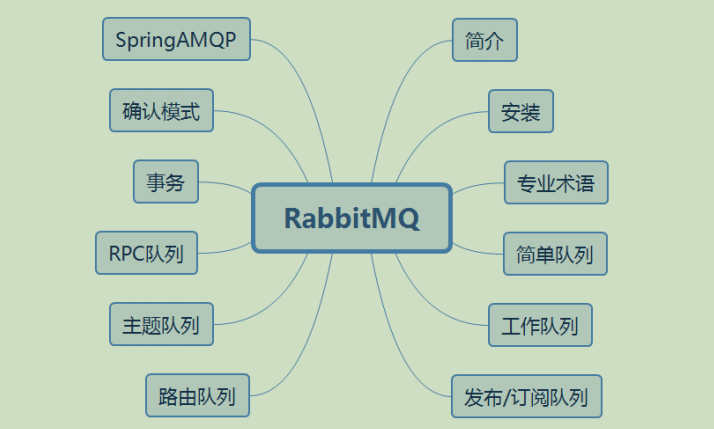

RabbitMQ
1.学习目标

2.MQ简介
在计算机科学中，消息队列（英语：Message queue）是一种进程间通信或同一进程的不同线程间的通信方式，软件的贮列用来处理一系列的输入，通常是来自用户。消息队列提供了异步的通信协议，每一个贮列中的纪录包含详细说明的数据，包含发生的时间，输入设备的种类，以及特定的输入参数，也就是说：消息的发送者和接收者不需要同时与消息队列互交。消息会保存在队列中，直到接收者取回它。
2.1.实现
消息队列常常保存在链表结构中。拥有权限的进程可以向消息队列中写入或读取消息。
目前，有很多消息队列有很多开源的实现，包括 JBoss Messaging 、 JORAM 、 Apache
ActiveMQ 、 Sun Open Message Queue 、 IBM MQ 、 Apache Qpid 和 HTTPSQS 。
当前使用较多的消息队列有 RabbitMQ 、 RocketMQ 、 ActiveMQ 、 Kafka (并发能力最高）、 ZeroMQ 、 MetaMq等，而部分数据库如 Redis 、 Mysql 以及 phxsql 也可实现消息队列的功能。
2.2.特点
MQ是消费者-生产者模型的一个典型的代表，一端往消息队列中不断写入消息，而另一端则可以读取或者订阅消息队列中的消息。MQ和JMS类似，但不同的是JMS是SUN JAVA消息中间件服务的一个标准和API定义，而MQ则是遵循了AMQP协议的具体实现和产品。
注意：
AMQP ，即Advanced Message Queuing Protocol,一个提供统一消息服务的应用层标准高级消息队列协议,是应用层协议的一个开放标准,为面向消息的中间件设计。基于此协议的客户端与消息中间件可传递消息，并不受客户端/中间件不同产品，不同的开发语言等条件的限制。
JMS ，Java消息服务（Java Message Service）应用程序接口，是一个Java平台中关于面向消息中间件的API，用于在两个应用程序之间，或分布式系统中发送消息，进行异步通信。 Java消息服务是一个与具体平台无关的API，绝大多数MOM提供商都对JMS提供支持。常见的消息队列，大部分都实现了JMS API，如 ActiveMQ ， Redis 以及 RabbitMQ 等。
2.3. 优缺点
优点
应用耦合、异步处理、流量削锋
解耦
传统模式：

传统模式的缺点：
系统间耦合性太强，如上图所示，系统A在代码中直接调用系统B和系统C的代码，如果将来D系统接入，系统A还需要修改代码，过于麻烦！
中间件模式：

中间件模式的的优点：
将消息写入消息队列，需要消息的系统自己从消息队列中订阅，从而系统A不需要做任何修改。
异步
传统模式：

传统模式的缺点：
一些非必要的业务逻辑以同步的方式运行，太耗费时间。
中间件模式：

中间件模式的的优点：
将消息写入消息队列，需要消息的系统自己从消息队列中订阅，从而系统A不需要做任何修改。
削峰
传统模式：

传统模式的缺点：
并发量大的时候，所有的请求直接怼到数据库，造成数据库连接异常
中间件模式：

中间件模式的的优点：
系统A慢慢的按照数据库能处理的并发量，从消息队列中慢慢拉取消息。在生产中，这个短暂的高峰期积压是允许的。
缺点
系统可用性降低、系统复杂性增加
2.4. 使用场景
消息队列，是分布式系统中重要的组件，其通用的使用场景可以简单地描述为：当不需要立即获得结果，但是并发量又需要进行控制的时候，差不多就是需要使用消息队列的时候。
在项目中，将一些无需即时返回且耗时的操作提取出来，进行了异步处理，而这种异步处理的方式大大的节省了服务器的请求响应时间，从而提高了系统的吞吐量。
2.5. 为什么使用RabbitMQ
AMQP，即Advanced Message Queuing Protocol，高级消息队列协议，是应用层协议的一个开放标准，为面向消息的中间件设计。消息中间件主要用于组件之间的解耦，消息的发送者无需知道消息使用者的存在，反之亦然。
AMQP的主要特征是面向消息、队列、路由（包括点对点和发布/订阅）、可靠性、安全。
RabbitMQ是一个开源的AMQP实现，服务器端用Erlang语言编写，支持多种客户端，如： Python 、 Ruby 、 .NET 、 Java 、 JMS 、 C 、 PHP 、 ActionScript 、 XMPP 、 STOMP 等，支持AJAX。用于在分布式系统中存储转发消息，在易用性、扩展性、高可用性等方面表现不俗。
总结如下：
- 基于AMQP协议
- 高并发(是一个容量的概念，服务器可以接受的最大任务数量)
- 高性能(是一个速度的概念，单位时间内服务器可以处理的任务数)
- 高可用(是一个持久的概念，单位时间内服务器可以正常工作的时间比例)
- 强大的社区支持，以及很多公司都在使用
- 支持插件
- 支持多语言
3.安装
3.1.安装Erlang
3.2.安装RabbitMQ
（注意！）修改防火墙操作我的电脑没有弄
访问的时候地址栏输入的是：192.168.10.24:15762
检测服务：systemctl status rabbitmq-server.service
注意启动rabbitmq服务：systemctl start rabbitmq-server.service
3.2.1.管理页面操作
3.2.1.角色，权限讲解
RabbitMQ角色分类
none:不能访问 management plugin（管理插件）
impersonator:演员？？？
management:
用户可以通过AMQP做的任何事外加：
- 列出自己可以通过AMQP登入的virtual hosts
- 查看自己的virtual hosts中的queues, exchanges 和 bindings
- 查看和关闭自己的channels 和 connections
- 查看有关自己的virtual hosts的“全局”的统计信息，包含其他用户在这些virtual hosts中的活动。
policymaker
management可以做的任何事外加：
- 查看、创建和删除自己的virtual hosts所属的policies和parameters
monitoring
management可以做的任何事外加：
- 列出所有virtual hosts，包括他们不能登录的virtual hosts
- 查看其他用户的connections和channels
- 查看节点级别的数据如clustering和memory使用情况
- 查看真正的关于所有virtual hosts的全局的统计信息
administrator
policymaker和monitoring可以做的任何事外加:
- 创建和删除virtual hosts
- 查看、创建和删除users
- 查看创建和删除permissions
- 关闭其他用户的connections
RabbitMQ权限控制
默认virtual host：”/“
默认用户：guest
guest具有 “/“ 上的全部权限，仅能有localhost访问RabbitMQ包括Plugin，建议删除或更改密码。可通过将配置文件中 loopback_users 置空来取消其本地访问的限制： [{rabbit, [{loopback_users, []}]}]
用户仅能对其所能访问的virtual hosts中的资源进行操作。这里的资源指的是virtual hosts中的 exchanges、queues等，操作包括对资源进行配置、写、读。配置权限可创建、删除资源并修改资源的行为，写权限可向资源发送消息，读权限从资源获取消息。
比如：
exchange和queue的declare与delete分别需要exchange和queue上的配置权限
exchange的bind与unbind需要exchange的读写权限
queue的bind与unbind需要queue写权限exchange的读权限
发消息(publish)需exchange的写权限
获取或清除(get、consume、purge)消息需queue的读权限
对何种资源具有配置、写、读的权限通过正则表达式来匹配，具体命令如下： set_permissions [-p <vhostpath>] <user><conf> <write> <read> ,其中， <conf> <write> <read> 的位置分别用正则表达式来匹配特定的资源，如 ‘^(amq.gen.*|amq.default)$’ 可以匹配server
生成的和默认的exchange， ‘^$’ 不匹配任何资源
要注意的是RabbitMQ会缓存每个connection或channel的权限验证结果、因此权限发生变化后需要重连才能生效。
4.RabbitMQ专业术语
官网地址：http://www.rabbitmq.com/getstarted.html
4.1. Producing
Producing意思不仅仅是发送消息。发送消息的程序叫做producer生产者。

4.2. Queue
Queue是一个消息盒子的名称。它存活在 RabbitMQ 里。虽然消息流经 RabbitMQ 和你的应用程序，但是他们只能在 Queue 里才能被保存。Queue 没有任何边界的限制，你想存多少消息都可以，它本质上是一个无限的缓存。许多生产者都可以向一个 Queue 里发送消息，许多消费者都可以从一个 Queue 里接收消息。

4.3. Consuming
Consuming 的意思和接收类似。等待接收消息的程序叫做消费者。

注意：生产者，消费者和代理不一定非要在同一台机器上。
4.4. ConnectionFactory、Connection、Channel
ConnectionFactory 、 Connection 、 Channel 都是RabbitMQ对外提供的API中最基本的对象。
Connection 是RabbitMQ的 socket （套接字）连接，它封装了 socket 协议相关部分逻辑。
ConnectionFactory 为Connection的制造工厂。
Channel 是我们与RabbitMQ打交道的最重要的一个接口，我们大部分的业务操作是在Channel这个接口中完成的，包括定义 Queue 、定义 Exchange 、绑定 Queue 与 Exchange 、发布消息等。
5.简单模式队列
在这部分的使用指南中，我们要用 Java 写两个程序；一个是生产者，他发送一个消息，另一个是消费者，它接收消息，并且把消息打印出来。我们将会忽略一些Java API 的细节，而是将注意力主要放在我们将要做的这件事上，这件事就是发送一个 “Hello World” 消息。
在下面的图中，”P” 代表生产者，而 “C” 代表消费者。中间的就是一个 Queue，一个消息缓存区。

5.1.创建项目


5.2.添加依赖

1 | <!-- https://mvnrepository.com/artifact/com.rabbitmq/amqp-client --> |
接下来进行一个简单队列的实现：HelloWorld
5.3.Sending
我们把消息发送者叫 Send，消息接收者叫 Recv。消息发送者连接 RabbitMQ ，发送一个消息，然后退出。

Send.java:
1 | package com.xxxx.rabbitmq.simple.send; |
消息发送成功后，通过控制台和RabbitMQ管理页面可以看到队列的相关信息：


从红线那张图可以看到，此时有一条消息在发送中（线条没有降下去是因为还没有人接收）

5.4.Receiving
消息的发送者只是发送一个消息，我们的接收者需要不断的监听消息，并把它们打印出来。

Recv.java:
1 | package com.xxxx.rabbitmq.simple.receive; |
消息接收成功以后，通过控制台RabbitMQ管理界面可以看到队列的相关信息


可以看到在消息有人接收之后，红线降为0，并且连接和信道中也有了数据：


5.6.总结
问题：如果任务量很大，消息得不到及时的消费会造成队列积压，问题非常严重，比如内存溢出，消息丢失等。
解决：配置多个消费者消费消息。
总结：简单队列-处理消息效率不高，吞吐量较低，不适合生成环境
6.Work queues-工作模式队列
6.1.工作模式队列-消息轮询分发（Round-robin)
通过Helloworld工程我们已经能够构建一个简单的消息队列的基本项目，项目中存在几个角色:生产者、消费者、队列，而对于我们真实的开发中，对于消息的消费者通过是有多个的，比如在实现用户注册功能时，用户注册成功，会给响对应用户发送邮件，同时给用户发送手机短信，告诉用户已成功注册网站或者app 应用，这种功能在大部分项目开发中都比较常见，而对于helloworld 的应用中虽然能够对消息进行消费，但是有很大问题:消息消费者只有一个，当消息量非常大时，单个消费者处理消息就会变得很慢，同时给节点页带来很大压力，导致消息堆积越来越多。对于这种情况，RabbitMQ 提供了工作队列模式，通过工作队列提供做个消费者，对MQ产生的消息进行消费，提高MQ消息的吞吐率，降低消息的处理时间。处理模型图如下：

6.1.1.Sending
Send.java:
和之前相比不同的是多了循环发送消息。
1 | package com.xxxx.rabbitmq.work.send; |
6.1.2.Receiving
Recv01.java:
1 | package com.xxxx.rabbitmq.work.receive; |
Recv02.java和Recv01.java内容一样
6.1.3.测试
1.先开启两个消费者后，可以看到本地RabbitMQ的连接和信道和队列中多了数据：


2.开启生产者，发送20条数据：

再看Recv01 和 Recv02的控制台，可以看到两个消费者分别接收了一半的数据：


6.1.4.总结
从结果可以看出消息被平均分配到两个消费方，来对消息进行处理，提高了消息处理效率，创建多个消费者来对消息进行处理。这里RabitMQ采用轮询来对消息进行分发时保证了消息被平均分配到每个消费方，但是引入新的问题:真正的生产环境下，对于消息的处理基本不会像我们现在看到的这样，每个消费方处理的消息数量是平均分配的，比如因为网络原因，机器cpu,内存等硬件问题，消费方处理消息时同类消息不同机器进行处理时消耗时间也是不一样的，比如1号消费者消费1条消息时1秒，2号消费者消费1条消息是5秒，对于1号消费者比2号消费者处理消息快，那么在分配消息时就应该让1号消费者多收到消息进行处理，也即是我们通常所说的”能者多劳”,同样Rabbitmq对于这种消息分配模式提供了支持。
问题：任务量很大，消息虽然得到了及时的消费，单位时间内消息处理速度加快，提高了吞吐量，可是不同消费者处理消息的时间不同，导致部分消费者的资源被浪费。处理快的消费者已经处理完了等量的消息，但是还要等待处理慢的消费者处理完分配给他的等量的消息
解决：采用消息公平分发。
总结：工作队列-消息轮询分发-消费者收到的消息数量平均分配，单位时间内消息处理速度加快，提高了吞吐量。
6.2.工作模式队列-消息公平分发(fair dispatch)
在案例01中对于消息分发采用的是默认轮询分发，消息应答采用的自动应答模式，这是因为当消息进入队列，RabbitMQ就会分派消息。它不看消费者为应答的数目，只是盲目的将第n条消息发给第n个消费者。(不管哪个消费者的消息处理快慢，都默认给消费者分配相同的消息数目)
为了解决这个问题，我们使用 basicQos(prefetchCount = 1) 方法，来限制RabbitMQ只发不超过1条的消息给同一个消费者。当消息处理完毕后，有了反馈，才会进行第二次发送。执行模型图如下:

6.2.1.Sending
Send.java，和上面的轮询没有变化：
1 | package com.xxxx.rabbitmq.work.fair.send; |
6.2.2.Receiving
Recv01.java,和轮询相比，设置了一个处理时间，01设置处理时间为1秒，02为2秒。添加了一个prefetchCount，限制RabbitMQ只发不超过1条消息给同一个消费者，并且当消息处理完了后，有了反馈，才会进行第二次发送。另外就是添加了一个手动确认消息，并将消息队列中的自动确认参数修改为了 false：
1 | package com.xxxx.rabbitmq.work.fair.receive; |
Recv02.java和01一样。
6.2.3.测试
启动两个消费者，再开启生产者：
生产者同样循环发送了20条消息，
但是由于消费者的消息处理能力不同，两个消费者最终处理消息的数目也不同：


6.2.4.总结
从结果可以看出1号消费者消费消息数量明显高于2号，即消息通过fair 机制被公平分发到每个消费者。
问题：生产者产生的一个消息只可以被一个消费者消费，相同消息不可以被其他消费者消费，可不可以被多个消费者消费呢？
解决：采用发布与订阅模式。
总结：工作队列-公平轮询分发-根据不同消费者机器硬件配置，消息处理速度不同，收到的消息数量也不同，通常速度快的处理的消息数量比较多，最大化使用计算机资源。适用于生成环境。
7.Publish/Subscribe-消息的发布与订阅模式队列
对于微信公众号，相信每个人都订阅过，当公众号发送新的消息后，对于订阅过该公众号的所有用户均可以收到消息，这个场景大家都能明白，同样对于RabbitMQ消息的处理也支持这种消息处理，当生产者把消息投送出去后，不同的消费者均可以对该消息进行消费，而不是消息被一个消费者消费后就立即从队列中删除，对于这种消息处理，我们通常称之为消息的发布与订阅模式，凡是消费者订阅了该消息，均能够收到对应消息进行处理，比较常见的如用户注册操作。模型图如下:

从图中看到:
- 消息产生后不是直接投送到队列中，而是将消息先投送给Exchange交换机，然后消息经过Exchange交换机投递到相关队列
- 多个消费者消费的不再是同一个队列，而是每个消费者消费属于自己的队列。
7.1.Sending
采用fanout广播模式
Send.java:和之前的模式相比，这里是根据信道绑定交换机，而不是绑定队列，并且信道中设置了交换机，取消了队列，将队列设为空：
1 | package com.xxxx.rabbitmq.publish.send; |
7.2.Receiving
这里对于消费者，消费消息时，消息通过交换机Exchange被路由到指定队列,绑定队列到指定交换机来实现，一个消费者接到消息后用于邮件发送模拟，另一消费者收到消息，用于短信发送模拟。
Recv01.java:不同的是这里是根据信道获取排他队列，将交换机和队列绑定。
1 | package com.xxxx.rabbitmq.publish.receive; |
Recv02.java和01一样
7.3.测试
运行Send,Recv01和Recv02：
看到结果是，01和02都能接收到Send发送来的消息：


并且在本地RabbitMQ上可以看到，队列中多了两条数据：
AD:表示自动删除
**Excl:表示排他队列 **排他队列优点：可以自动删除

交换机中也多了一个交换机：

7.4. 总结
从结果可以看出生产者发送了一条消息，用于邮件发送和短信发送的消费者均可以收到消息进行后续处理。
问题：生产者产生的消息所有消费者都可以消费，可不可以指定某些消费者消费呢？
解决：采用direct路由模式。
8.Routing-路由模式
通过案例03,可以看到，生产者将消息投送给交换机后，消息经交换机分发到不同的队列即:交换机收到消息，默认对于绑定到每个交换机的队列均会接收到交换机分发的消息，对于案例03的交换机的消息分发Exchange Types为 fanout 类型，通常在真正项目开发时会遇到这种情况:在对项目信息输出日志进行收集时，会把日志(error warning,info)分类进行输出，这时通过Exchange Types中的 direct 类型就可以实现，针对不同的消息，在对消息进行消费时，通过 Exchange types 以及 Routing key 设置的规则 ，便可以将不同消息路由到不同的队列中然后交给不同消费者进行消费操作。模型图如下:

从图中可以看出:
生产者产生的消息投给交换机
交换机投送消息时的Exchange Types为direct类型
消息通过定义的Routing Key（如图中设置的：error,info,warning)被路由到指定的队列进行后续消费
具体实现核心代码如下:
8.1.Sending
Send.java:设置了交换机类型为direct，并给该生产者绑定了一个路由键：
1 | package com.xxxx.rabbitmq.route.send; |
8.2.Receving
Recv01.java:设置了该消费者只接收绑定了error路由键的消息：
1 | package com.xxxx.rabbitmq.route.receive; |
Recv02.java:设置了该消费者只接收绑定了error、info、warning的路由键的消息
1 | package com.xxxx.rabbitmq.route.receive; |
8.3.测试：
此时生产者绑定了error路由键，消费者01有error这个设置，消费者02有error,info,warning这三个设置，所以当生产者发送消息时，两个消费者都能接收此条消息：


而当生产者绑定的是info路由键时，那这又消费者02能接收到此条消息。

其实一开始没有交换机 将产生的消息放入队列的那一步中，我们设置的是队列名，但后来有了交换机，没有路由键时，我们就将队列名设为了空，有了路由键后，我们将这个参数设为了路由键名称，这说明其实我们一直都在使用交换机，只不过之前一值使用的时默认的交换机，而且连接模式为direct，所以写入队列名，可以直接连接到对列中。
8.4. 总结
从结果可以看出生产者发送了多条设置了路由规则的消息，消费者可以根据具体的路由规则消费对应队列中的消息，而不是所有消费者都可以消费所有消息了。
问题：生产者产生的消息如果场景需求过多需要设置很多路由规则，可不可以减少？
解决：采用topic主题模式。
9.Topics-主题模式队列
通过案例04看到消息通过交换机Exchange Type以及Routing Key规则，可以将消息路由到指定的队列，也符合在工作中的场景去使用的一种方式，对于RabbitMq 除了 direct 模式外，Mq 同样还提供了 topics 主题模式来对消息进行匹配路由，比如在项目开发中，拿商品模块来说，对于商品的查询功能在对商品进行查询时我们将查询消息路由到查询对应队列，而对于商品的添加、更新、删除等操作我们统一路由到另外一个队列来进行处理，此时采用direct 模式可以实现，但对于维护的队列可能就不太容易进行维护，如果涉及模块很多，此时对应队列数量就很多，此时我们就可以通过 topic 主题模式来对消息路由时进行匹配，通过指定的匹配模式将消息路由到匹配到的队列中进行后续处理。对于routing
key匹配模式定义规则举例如下:
routing key为一个句点号 . 分隔的字符串（我们将被句点号 . 分隔开的每一段独立的字符串称为一个单词），如“stock.usd.nyse”、“nyse.vmw”、“quick.orange.rabbit”
routing key中可以存在两种特殊字符 * 与 # ，用于做模糊匹配，其中 ***** 用于匹配一个单词， # 用于匹配多个单词（可以是零个）
例如：

以上图中的配置为例：
- routingKey=”quick.orange.rabbit”的消息会同时路由到Q1与Q2，
- routingKey=”lazy.orange.fox”的消息会路由到Q1，Q2,
- routingKey=”lazy.brown.fox”的消息会路由到Q2，
- routingKey=”lazy.pink.rabbit”的消息会路由到Q2；
- routingKey=”quick.brown.fox”;
- routingKey=”orange”;
- routingKey=”quick.orange.male.rabbit”的消息将会被丢弃，因为它们没有匹配任何bindingKey。
具体实现代码：
9.1.Sending
1 | package com.xxxx.rabbitmq.topic.send; |
9.2.Receving
Recv01.java:
1 | package com.xxxx.rabbitmq.topic.receive; |
Recv02.java:
1 | package com.xxxx.rabbitmq.topic.receive; |
9.3.测试：


 、
、


9.4. 总结
从结果可以看出生产者发送了多条设置了路由匹配规则(主题)的消息，根据不同的路由匹配规则(主
题)，可以将消息根据指定的routing key路由到匹配到的队列中，也是在生产中比较常见的一种消息处理方式。
问题：RabbitMQ本身是基于异步的消息处理，是否可以同步实现？
解决：采用RPC模式
10.RPC-远程过程调用模式队列
不常用！
MQ本身是基于异步的消息处理，前面的示例中所有的生产者（P）将消息发送到RabbitMQ后不会知道消费者（C）处理成功或者失败（甚至连有没有消费者来处理这条消息都不知道）。
但实际的应用场景中，我们很可能需要一些同步处理，需要同步等待服务端将我的消息处理完成后再进行下一步处理。这相当于RPC（Remote Procedure Call，远程过程调用）。在RabbitMQ中也支持RPC。

客户端又是生产者又是消费者
11.RabbitMQ消息的事务机制
在使用RabbitMQ的时候，我们可以通过消息持久化操作来解决因为服务器的异常奔溃导致的消息丢失，除此之外我们还会遇到一个问题，当消息的发布者在将消息发送出去之后，消息到底有没有正确到达broker(可以简单理解为MQ的一个服务器) 代理服务器呢？如果不进行特殊配置的话，默认情况下发布操作是不会返回任何信息给生产者的，也就是默认情况下我们的生产者是不知道消息有没有正确到达broker的，如果在消息到达broker之前已经丢失的话，持久化操作也解决不了这个问题，因为消息根本就没到达代理服务器，你怎么进行持久化，那么这个问题该怎么解决呢？
RabbitMQ为我们提供了两种方式：
通过AMQP事务机制实现，这也是AMQP协议层面提供的解决方案；
通过将channel设置成confirm模式来实现；
11.1. AMQP事物机制控制
RabbitMQ中与事务机制有关的方法有三个： txSelect() , txCommit() 以及 txRollback(),
txSelect() 用于将当前channel设置成transaction模式， txCommit() 用于提交事务，
txRollback() 用于回滚事务，在通过 txSelect() 开启事务之后，我们便可以发布消息给broker代理
服务器了，如果 txCommit() 提交成功了，则消息一定到达了broker了，如果在 txCommit() 执行之前broker异常崩溃或者由于其他原因抛出异常，这个时候我们便可以捕获异常通过 txRollback() 回滚事务。
SendTx.java:
1 | package com.xxxx.rabbitmq.tx.send; |
事务确实能够解决producer与broker之间消息确认的问题，只有消息成功被broker接受，事务提交才能成功，否则我们便可以在捕获异常进行事务回滚操作同时进行消息重发，但是使用事务机制的话会降低RabbitMQ的性能，那么有没有更好的方法既能保障producer知道消息已经正确送到，又能基本上不带来性能上的损失呢？从AMQP协议的层面看是没有更好的方法，但是RabbitMQ提供了一个更好的方案，即将channel信道设置成confirm模式。
12. confirm确认模式
通过AMQP协议层面为我们提供了事务机制解决了这个问题，但是采用事务机制实现会降低RabbitMQ的消息吞吐量，此时处理AMQP协议层面能够实现消息事物控制外，我们还有第二种方式即:Confirm模式。
12.1. Confirm确认模式原理
生产者将信道设置成confirm模式，一旦信道进入confirm模式，所有在该信道上面发布的消息都会被指派一个唯一的ID(从1开始)，一旦消息被投递到所有匹配的队列之后，broker就会发送一个确认给生产者（包含消息的唯一ID）,这就使得生产者知道消息已经正确到达目的队列了，如果消息和队列是可持久化的，那么确认消息会将消息写入磁盘之后发出，broker回传给生产者的确认消息中deliver-tag域包含了确认消息的序列号，此外broker也可以设置basic.ack的multiple域，表示到这个序列号之前的所有消息都已经得到了处理。
confirm模式最大的好处在于他是异步的，一旦发布一条消息，生产者应用程序就可以在等信道返回确认的同时继续发送下一条消息，当消息最终得到确认之后，生产者应用便可以通过回调方法来处理该确认消息，如果RabbitMQ因为自身内部错误导致消息丢失，就会发送一条nack消息，生产者应用程序同样可以在回调方法中处理该nack消息。
在channel 被设置成 confirm 模式之后，所有被 publish 的后续消息都将被 confirm（即 ack 确认） 或者被nack（没被确认）一次。但是没有对消息被 confirm 的快慢做任何保证，并且同一条消息不会既被 confirm又被nack 。
注意:两种事物控制形式不能同时开启！
12.2. Confirm确认机制代码实现
实现生产者confirm 机制有三种方式:
普通confirm模式：每发送一条消息后，调用waitForConfirms()方法，等待服务器端confirm。实际上是一种串行confirm了。
批量confirm模式：每发送一批消息后，调用waitForConfirmsOrDie()方法，等待服务器端confirm。
异步confirm模式：提供一个回调方法，服务端confirm了一条或者多条消息后Client端会回调这个方法。
12.3.同步Confirm
Send.java: 普通confirm模式 和 批量confirm模式
1 | package com.xxxx.rabbitmq.confirm.sync.send; |
以上代码可以看出，使用同步的方式需要等所有的消息发送成功以后才会执行后面代码，只要有一个消息未被确认就会抛出IO异常。解决办法可以使用异步确认。
12.4.异步confirm
异步confirm模式的编程实现最复杂，Channel对象提供的 ConfirmListener() 回调方法只包含deliveryTag （当前Chanel发出的消息序号），我们需要自己为每一个Channel维护一个 unconfirm的消息序号集合，每publish一条数据，集合中元素加1，每回调一次 handleAck 方法， unconfirm 集合删掉相应的一条 （multiple=false） 或多条 （multiple=true） 记录。从程序运行效率上看，这个 unconfirm 集合最好采用有序集合SortedSet存储结构。实际上， waitForConfirms() 方法也是通过SortedSet维护消息序号的。
1 | package com.xxxx.confirm.async.send; |
异步模式的优点就是执行效率高，不需要等待消息执行完，只需要监听消息即可。
13.Spring集成RabbitMQ
官网：https://spring.io/projects/spring-amqp
13.1. 为什么使用spring AMQP？
基于Spring之上社区活跃
对AMQP协议进行了高度的封装
极大的简化了RabbitMQ的操作
易用性、可扩展
13.2. 创建聚合项目
创建父项目spring-rabbitmq


创建springamqp-provider:
鼠标右键spring-rabbitmq项目new -> Module


创建rabbitmq-consumer
和创建springamqp-provider一样

13.3.父项目依赖
1 |
|